Lunches
- Shawarma (5$)
- Turkish bashka (6$)
- Zinger (4$)
- Grilled chicken (8$)
- fish (6$)
Shawarma ingredients in short include: Marinated meat (chicken, lamb, beef) pita bread or flatbread Fresh fillings (lettuce, tomato, onion, pickled cucumber) tahini sauce Additional seasoning (optional)
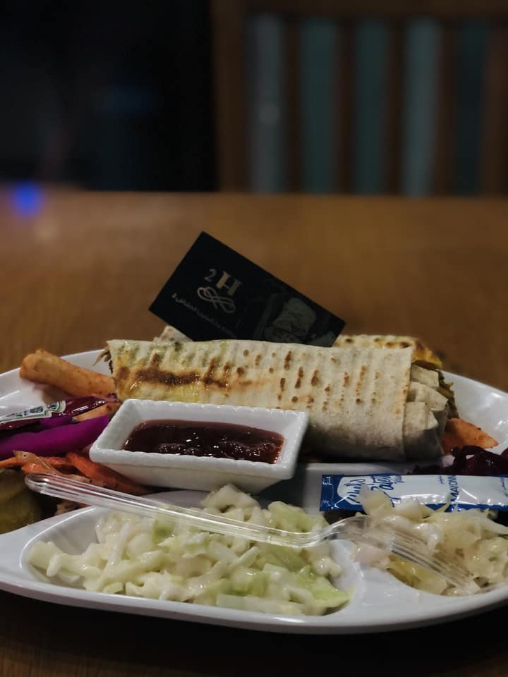Bashka, or shawarma, is bread stuffed with a mixture of marinated grilled chicken and vegetables, with ketchup and mayonnaise added, like the Syrian shawarma sandwich.
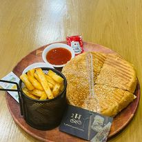Zinger Ingredients: Marinated chicken pieces, bread, spices, sauce and mixed vegetables
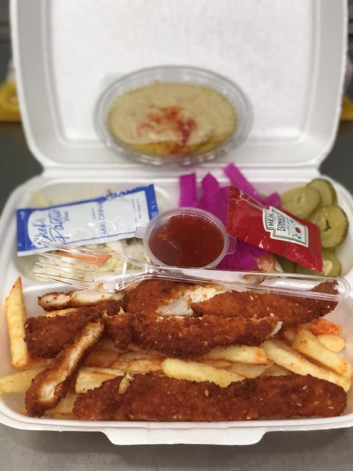Grilled chicken ingredients: Marinated chicken grilled on charcoal, vegetables and sauce are added
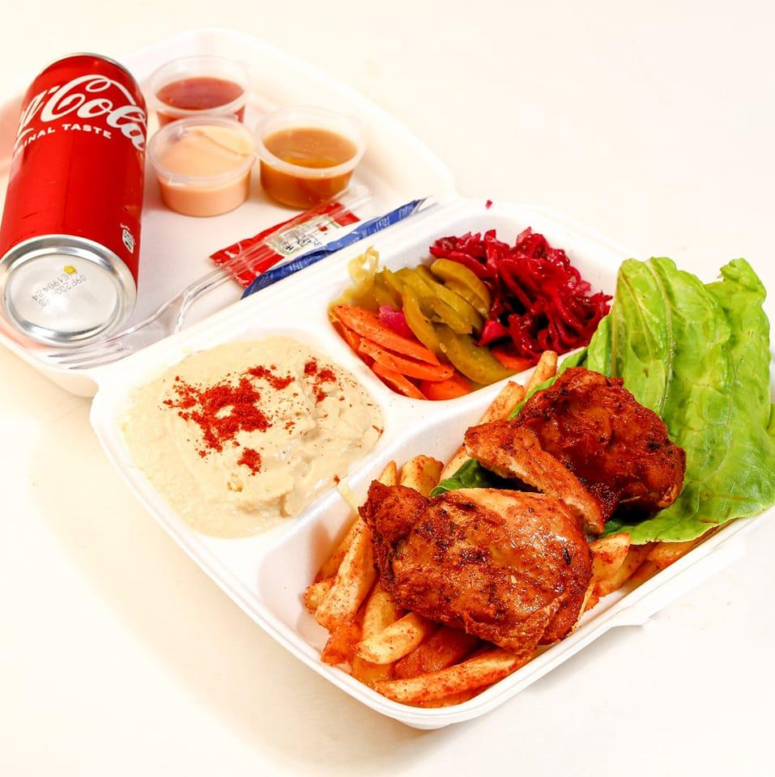Fish: The fish is grilled, and spices, parsley, and spices are placed upon request
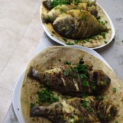appetizers
- Tabbouleh (2$)
- hummus (1$)
- pickle (2$)
- Kibbeh (3$)
Tabbouleh ingredients: fine bulgur, parsley, lettuce, tomatoes, green mint, finely chopped green onion, pomegranate, lemon juice, olive oil and salt
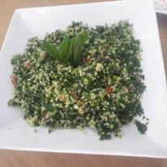Hummus ingredients: boiled chickpeas, parsley, tahini sauce, lemon juice, olive oil, salt, garlic and spices
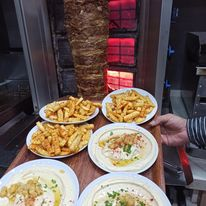There are many types of pickles, such as pickled cucumbers, carrots, garlic, and cauliflower
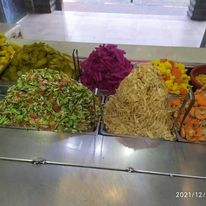Kibbeh ingredients: finely ground bulgur, seasoned meat and spices, and fried
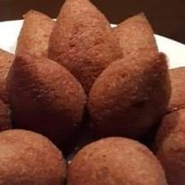drinks
- coffee (2$)
- Ice coffee (2$)
- juice (1.5$)
- tea (1$)
Coffee is a hot drink made from roasted and ground coffee beans. Coffee is one of the most popular and popular drinks around the world.

Coffee is a hot drink made from roasted and ground coffee beans. Coffee is one of the most popular and popular drinks around the world. This is coffee, milk is added to it and some flavors and chocolate as desired
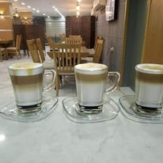The juice is made of fresh and delicious fruits and does not contain preservatives. There are all kinds
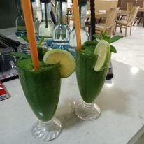Tea is a hot drink made from the leaves of the tea plant. Tea is one of the most popular and popular drinks around the world
.jpg)
sweet
- Kunafa (4.5$)
- Ice cream (3.5$)
Kunafa: It consists of the famous Kunafa dough, which is vermicelli in the form of long threads, with the addition of ghee, syrup (i.e. sugar, water and some additives), red dye and Nabulsi cheese.
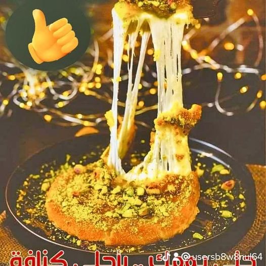Frozen dessert made from milk or water and sugar, and there are all flavors of them with nuts
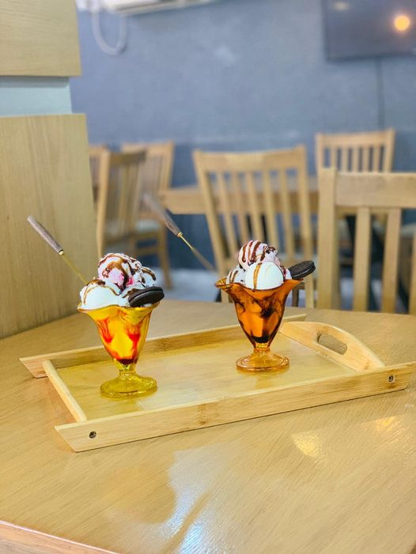